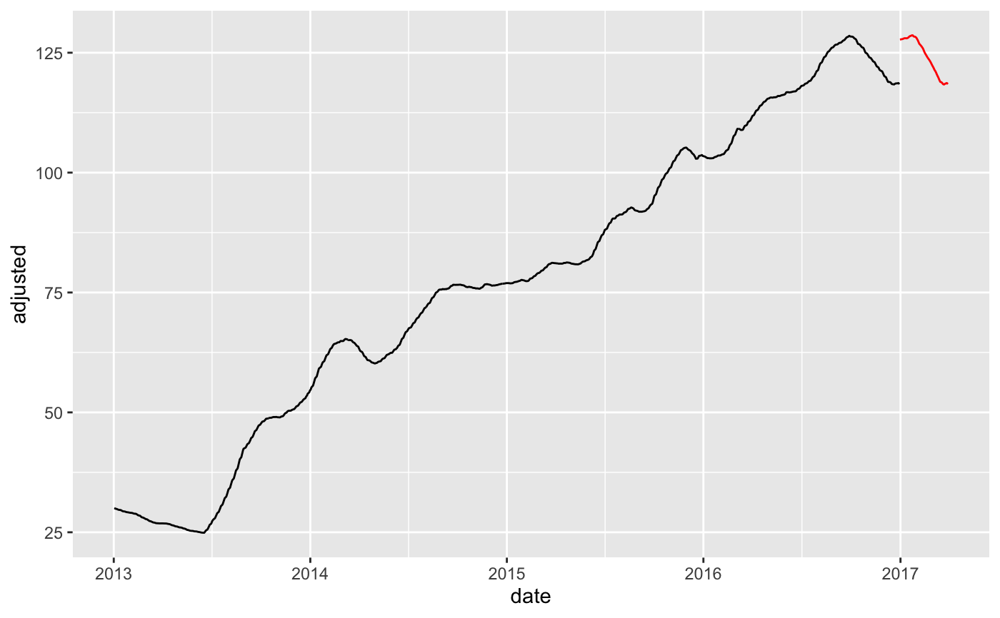
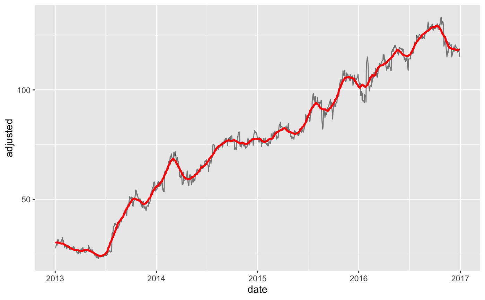

step_roll_apply creates a a specification of a recipe
step that will apply a function
to one or more a Numeric column(s).
step_roll_apply( recipe, ..., period, .f, align = c("center", "left", "right"), names = NULL, role = "predictor", trained = FALSE, columns = NULL, f_name = NULL, skip = FALSE, id = rand_id("roll_apply") ) # S3 method for step_roll_apply tidy(x, ...)
| recipe | A recipe object. The step will be added to the sequence of operations for this recipe. |
|---|---|
| ... | One or more numeric columns to be smoothed.
See |
| period | The number of periods to include in the local rolling window. This is effectively the "window size". |
| .f | A summary formula in one of the following formats:
|
| align | Rolling functions generate
|
| names | An optional character string that is the same
length of the number of terms selected by
|
| role | For model terms created by this step, what analysis role should they be assigned?. By default, the function assumes that the new variable columns created by the original variables will be used as predictors in a model. |
| trained | A logical to indicate if the quantities for preprocessing have been estimated. |
| columns | A character string of variables that will be
used as inputs. This field is a placeholder and will be
populated once |
| f_name | A character string for the function being applied.
This field is a placeholder and will be populated during the |
| skip | A logical. Should the step be skipped when the recipe is baked by bake.recipe()? While all operations are baked when prep.recipe() is run, some operations may not be able to be conducted on new data (e.g. processing the outcome variable(s)). Care should be taken when using skip = TRUE as it may affect the computations for subsequent operations. |
| id | A character string that is unique to this step to identify it. |
| x | A |
For step_roll_apply, an updated version of recipe with
the new step added to the sequence of existing steps (if any).
For the tidy method, a tibble with columns terms
(the selectors or variables selected), value (the feature
names).
TODO
recipes::step_window() stats::loess()
recipes::recipe() recipes::prep.recipe()
recipes::bake.recipe()
library(recipes) library(tidyverse) library(tidyquant) library(timetk) # Training Data FB_tbl <- FANG %>% filter(symbol == "FB") %>% select(symbol, date, adjusted) # New Data new_data <- FB_tbl %>% tk_index() %>% tk_make_future_timeseries(n_future = 90) %>% tibble(date = .) %>% mutate(date = date) %>% bind_cols(FB_tbl %>% slice((n() - 90 + 1):n())) # Create a recipe object with a step_roll_apply rec_ma_50 <- recipe(adjusted ~ ., data = FB_tbl) %>% step_roll_apply(adjusted, period = 50, .f = ~ AVERAGE(.x)) # Bake the recipe object - Applies the Loess Transformation training_data_baked <- bake(prep(rec_ma_50), FB_tbl) # Apply to New Data new_data_baked <- bake(prep(rec_ma_50), new_data) # Visualize effect training_data_baked %>% ggplot(aes(date, adjusted)) + geom_line() + geom_line(color = "red", data = new_data_baked)# ---- NEW COLUMNS ---- # Use the `names` argument to create new columns instead of overwriting existing rec_ma_30_names <- recipe(adjusted ~ ., data = FB_tbl) %>% step_roll_apply(adjusted, period = 30, .f = AVERAGE, names = "adjusted_ma_30") bake(prep(rec_ma_30_names), FB_tbl) %>% ggplot(aes(date, adjusted)) + geom_line(alpha = 0.5) + geom_line(aes(y = adjusted_ma_30), color = "red", size = 1)